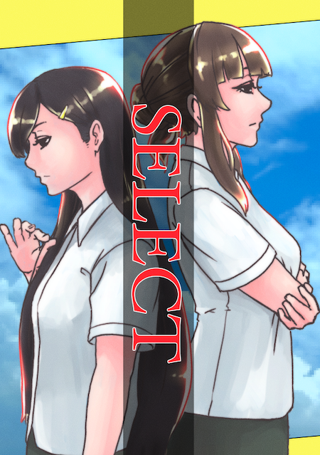

概要
内容
人生は選択の連続だ、と誰かが言っていた。
僕らは選択を積み重ね、今この場所にいる。 全ての出来事は、僕の、僕らの選択の結果だ。
僕らの前に掲示された選択肢。 目を瞑っても、耳を塞いでも、ただそこに在り続ける。 出来るのは、選び取ることだけ。
その先に続く道が何如なるものなのか、それは、進んでみなければわからない。 だからこそ、僕らは前を向かねばならない。 選択の一歩を踏み出すために、目の前にあるものを受け入れなければならない。
これは、僕らがその一歩を踏み出すまでの物語だ。
表紙
